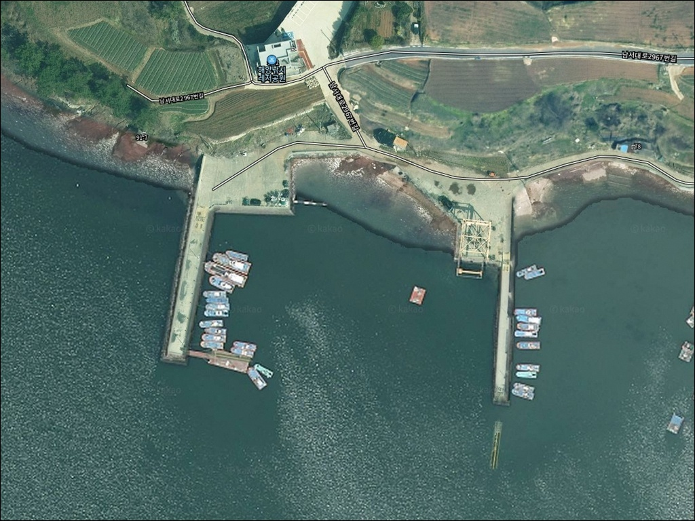
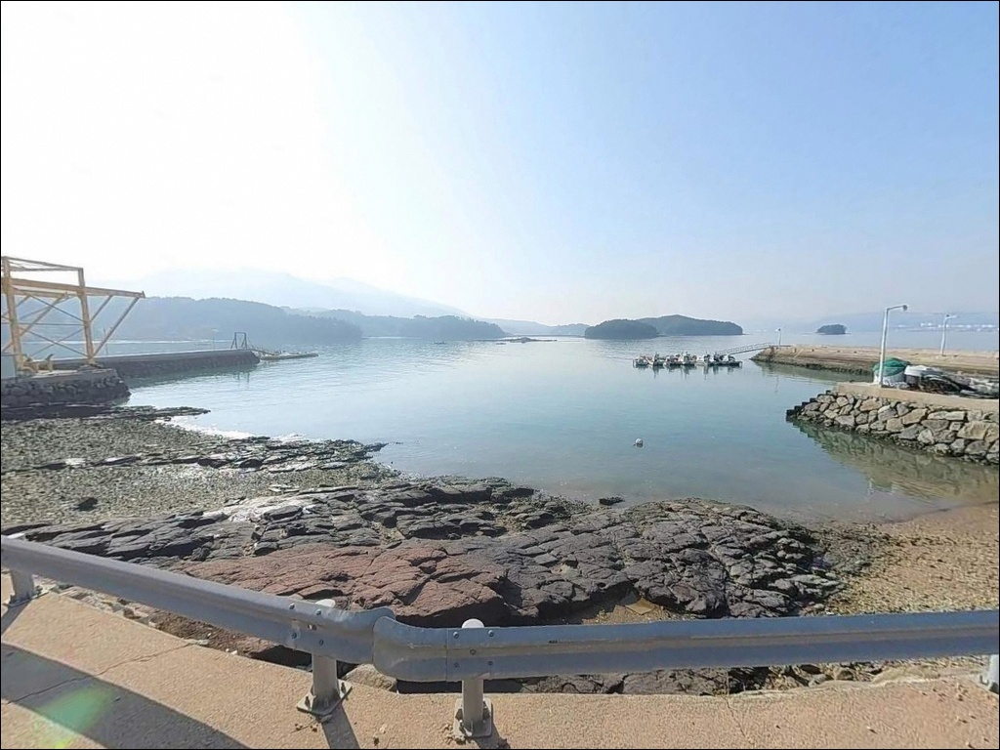
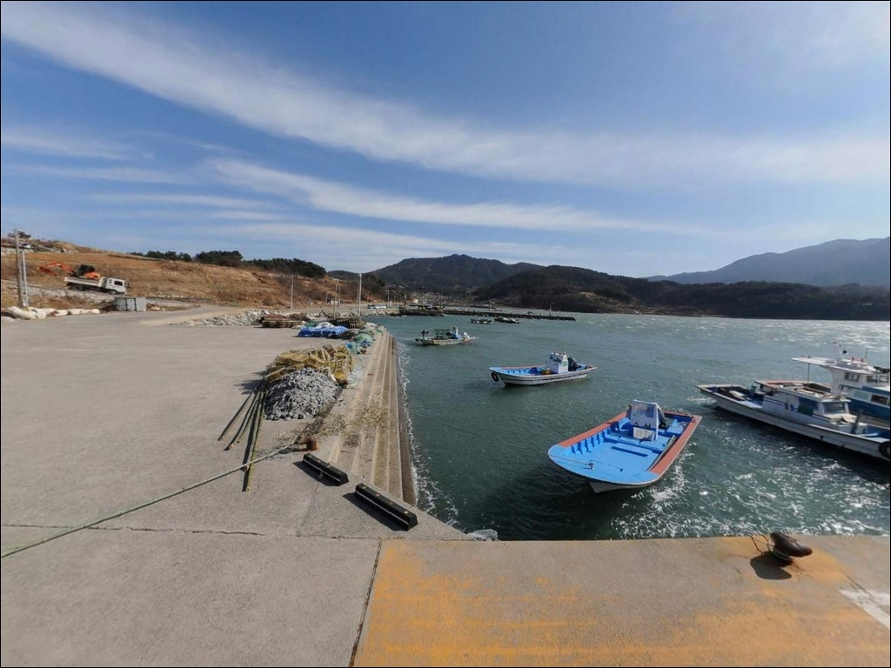
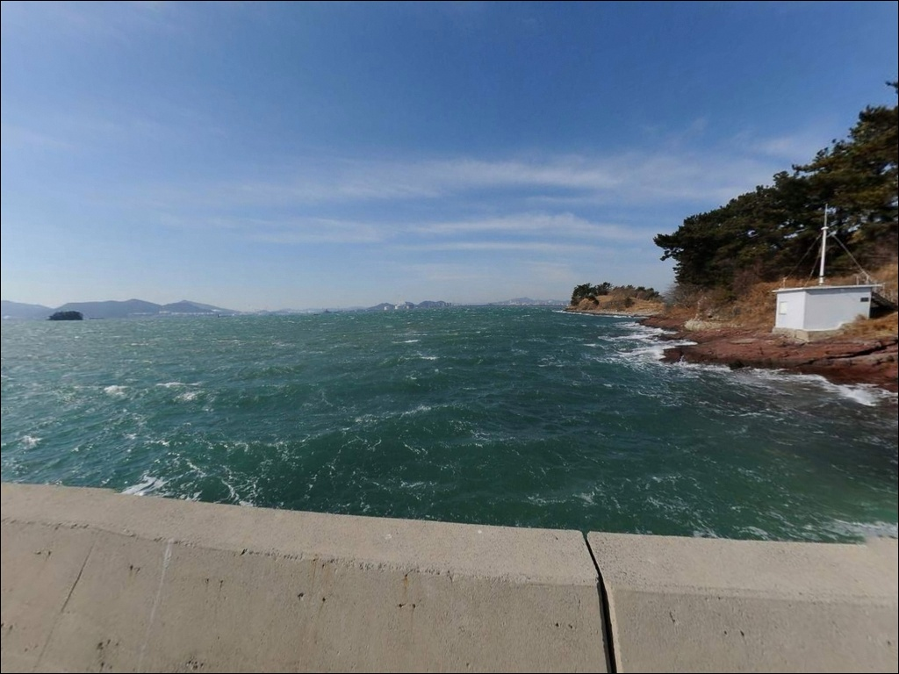
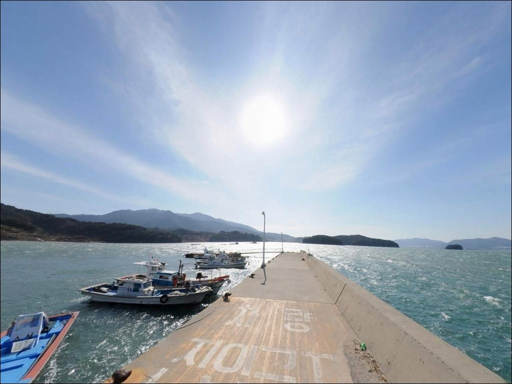
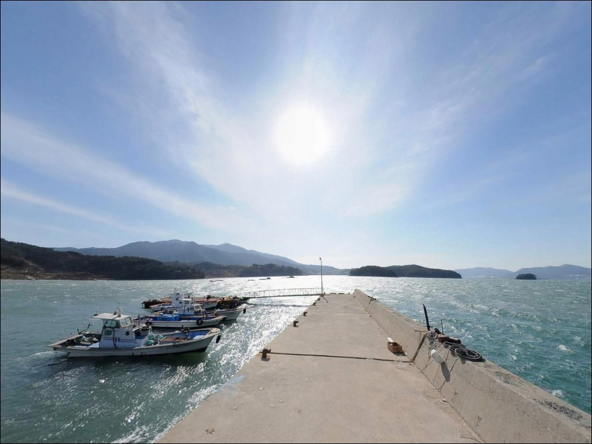
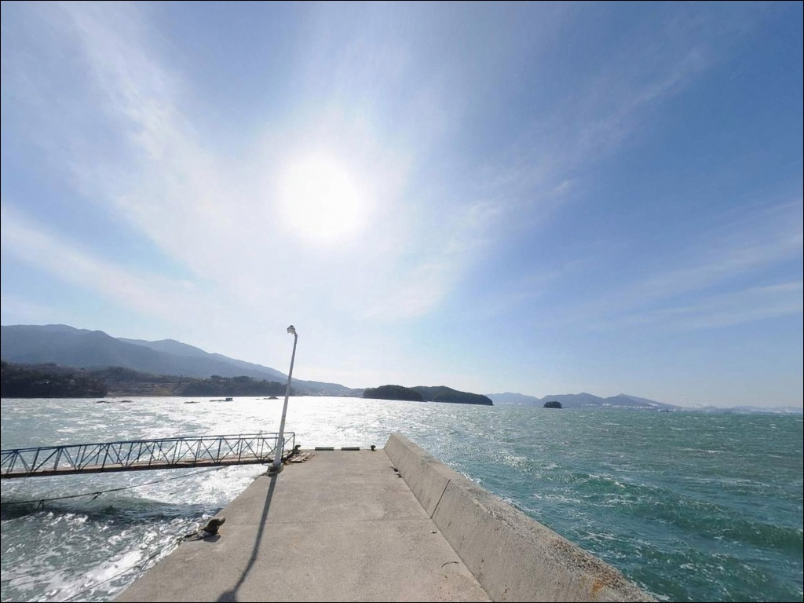
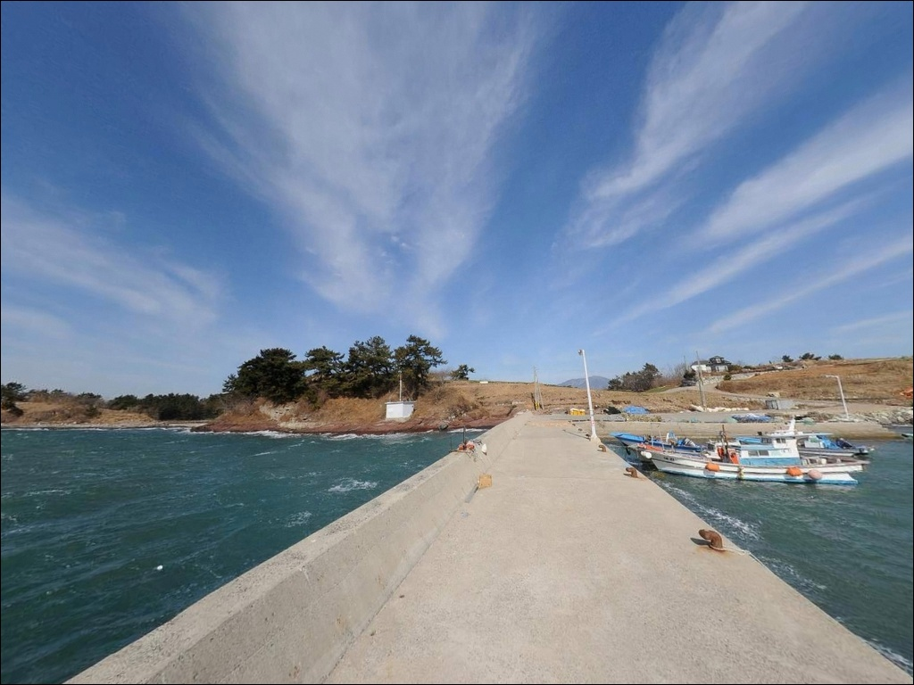
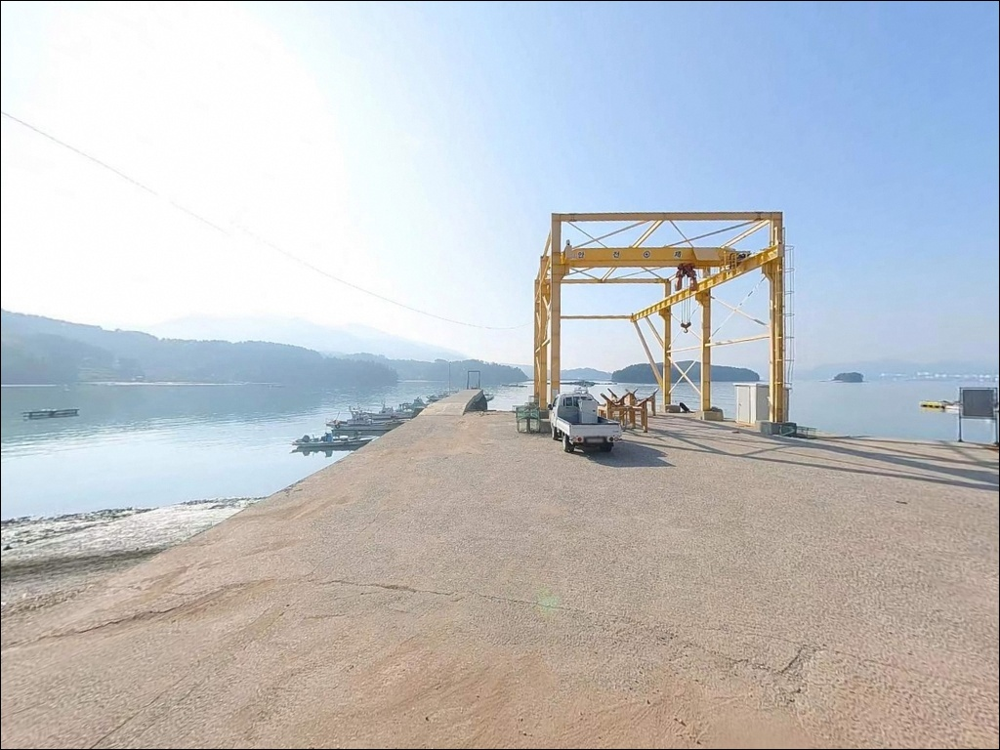

이 페이지에는 광고(제휴 링크 포함)가 있으며, 광고 링크를 통해 구매하면 운영자가 판매 수익 또는 수수료를 받을 수 있습니다. 포인트 사진: 카카오맵 스카이뷰·로드뷰. 이 페이지의 지도·사진 이미지는 카카오맵의 실제 서비스 이미지와 다를 수 있습니다.

갈화리방파제
경남 남해군 고현면 갈화리 1576-4
광양만 내만 방파제에서 가장 많이 틀리는 판단은
"방파제면 수심 충분하겠지"라는 가정입니다.
갈화리방파제는 내만 특성상 수심이 매우 얕아
채비를 가까이 내리면
바닥만 긁다 돌아오는 결과가 됩니다.
방파제 끝단까지 채비를 멀리 보내고
들물 타이밍에 맞춰 입장하는 것이
이 포인트를 제대로 쓰는 방법입니다.
이 글은 갈화리방파제의 진입 여건, 지형 구조,
낚시 방식 적합성, 차박 조건에 집중합니다.
조황 단정이나 특정 어종 보장은
이 글의 범위에 포함되지 않습니다.

갈화리방파제는 고현면 갈화리 마을 내부 도로를 통해
접근하는 구조입니다.
마을 진입로는 포장 상태이며
일반 승용차 기준 교행이 가능한 수준의 폭입니다.
방파제 초입까지 차량을 붙이는 것 자체는
큰 어려움이 없는 편입니다.
회차 공간은 방파제 입구 인근 공터와
마을 도로변에서 확보됩니다.
대형 캠핑카나 트레일러를 운용한다면
사전에 위성지도로 마을 진입 구간을
미리 확인하는 편이 안전합니다.
소형~중형 차량 기준으로는
진입과 회차 모두 무난합니다.
주차는 방파제 초입 소규모 공터와
선착장 주변 여유 공간을 활용하는 방식이
현실적입니다.
어선 정박 구역과 동선이 겹치지 않는 자리를
먼저 확인하고 주차하는 것이 기본입니다.

갈화리방파제는 광양만 내만 구조 덕분에
외해 파고의 직접 영향을 받지 않습니다.
잔잔한 수면이 유지되는 편이라
낚시를 마치고 조용히 하룻밤 머무는 용도로는
환경이 나쁘지 않습니다.
갈화리는 소규모 어촌 마을로
민가 밀집도가 낮고 야간 차량 통행도 적습니다.
어항 수준의 가로등이 일부 설치되어 있어
완전 암흑 환경은 아니지만,
어두운 구간이 있어
개인 조명은 반드시 지참해야 합니다.
맞은편 광양만 너머로
여수 석유화학단지와 산업단지 불빛이
수평선 방향을 채우는 야경이 펼쳐집니다.
차박을 즐기는 낚시인이라면
이 불빛 풍경이 이 포인트의
독특한 분위기가 됩니다.

갈화리방파제 반경 1km 이내에는
편의점이나 식당을 기대하기 어렵습니다.
갈화리는 소규모 어촌 마을 구조로,
완전 자급 체제로 진입하는 것이
현실적인 준비 방식입니다.
식수, 얼음, 낚시 소품은
출발 전에 모두 챙겨야 합니다.
고현면 소재지 방향으로 약 2~3km 이동하면
편의점과 소형 마트 등
기본 생활 인프라를 이용할 수 있습니다.
출발 전 물자 조달을 완료하기 어렵다면
고현면 소재지를 경유해
진입하는 동선을 계획하는 편이 효율적입니다.
응급 상황 발생 시 남해읍 방면으로
15km 안팎 거리에 있어
기본 안전 장비와 비상약품은
반드시 갖춰두는 것이 기본입니다.

갈화리방파제 방문 전 가장 먼저 확인할 것은
물때입니다.
광양만은 내만 구조이지만
창·낙조류 흐름이 분명하게 존재합니다.
바다타임에서 갈화리 기준 물때를 확인하고,
들물 시간대를 중심으로 입장 시각을
맞추는 것이 기본 전략입니다.
사리 전후에는 채비 컨트롤이
다소 어려워지는 편입니다.
수심이 얕은 내만 펄바닥 구조상
채비를 멀리 보내는 것이 조과에 직결됩니다.
원투용 채비는 여분을 충분히 준비하고,
밑걸림 대비로 봉돌과 바늘도
넉넉히 챙기는 편이 좋습니다.
갈화리방파제 관련 직접 낚시 후기가
많지 않은 포인트입니다.
출조 전에 "갈화리방파제 조황" 또는
"남해 고현면 방파제 조황" 키워드로
최신 현지 정보를 반드시 검색해 확인하는 것이
헛걸음을 막는 기본 습관입니다.

갈화리방파제는 광양만 내만 동쪽 해안에 자리합니다.
방파제 외항 방향이 광양만 수로와 접하는 구조로,
바닥은 펄과 모래가 혼재하는 내만 전형 지형입니다.
방파제 끝단 기준 수심은 얕아
가까운 자리에 채비를 내리면
바닥만 건드리는 결과가 됩니다.
광양만 내만 방파제는 수심이 얕아
원거리 공략이 조과를 결정하는 핵심 조건입니다.
방파제 끝단을 넘어 먼 곳으로 채비를 보낸 뒤
바닥층을 천천히 탐색하는 방식이
이 포인트 구조에 가장 잘 맞습니다.
광양만은 섬진강 하구와 연결된 내만형 해역으로
담수 유입 영향이 있어
수온 변화폭이 상대적으로 큽니다.
들물 시간대에 조류 흐름이 살아나면서
방파제 끝단과 외항 방향 구간에서
입질이 집중되는 구조입니다.
갈화리방파제는 조류가 활발해지는
들물 타이밍에 입질 집중도가 높아지는 구조입니다.
출조 전에 최신 조황 검색을 꼭 해보시기 바랍니다.

갈화리방파제에서 가장 잘 맞는 낚시는
원투낚시입니다.
펄과 모래가 섞인 내만 바닥 구조에서
밑걸림이 비교적 적어
채비를 안정적으로 운용할 수 있습니다.
청갯지렁이를 기본 미끼로 하여
방파제 끝단 너머 먼 구간을 노리는 방식이
이 포인트의 핵심 패턴입니다.
붕장어, 망둥어, 도다리 등
이 지형에서 기대해 볼 수 있는 어종입니다.
특히 여름~가을 야간 원투에서
붕장어 입질이 집중되는 경향이 있습니다.
볼락 라이트게임도 노려볼 만합니다.
방파제 석축과 테트라포드 주변을
지그헤드 웜으로 천천히 탐색하는 방식이
이 포인트 구조에 어울립니다.
야간 가로등 주변을 소형 지그헤드로 공략하면
볼락과 풀치 입질을 기대해 볼 수 있습니다.
릴찌낚시도 방파제 끝단 외항 방향에서
운용해 볼 수 있습니다.
들물 조류가 흐르는 타이밍에
반유동 채비를 외항 방향으로 흘리는 방식으로,
가을 이후 연안으로 접근하는
감성돔과 숭어를 대상으로 하는
중후반 시즌에 효율이 올라오는 편입니다.

갈화리방파제 여건이 기대에 못 미칠 때
첫 번째로 이동할 대안은
노량항입니다.
북쪽으로 약 4km 거리에 위치하며
같은 광양만 해역이지만
노량 수로 인접으로 조류 소통이
갈화리방파제보다 훨씬 활발합니다.
방파제 규모도 크고
원투낚시와 찌낚시 모두 대응이 가능합니다.
차면방파제도 같은 고현면 해역에 위치한
대안 포인트입니다.
갈화리방파제와 지형 패턴이 유사하면서
주차 여건이 더 넓은 편입니다.
당일 갈화리방파제 여건이 맞지 않을 때
5km 이내 이동으로 대응이 가능합니다.
화전방파제는 갈화리방파제에서
가장 가까운 거리에 있는 소형 방파제로,
낚시 구조가 유사해
진입 여건이 좋지 않을 때
바로 이동할 수 있는 1차 대안입니다.
차박 여건이 더 넓은 포구를 원한다면
설천면 대지포항 방면(약 8km)으로
이동하는 동선도 검토해 볼 수 있습니다.

원투낚시와 볼락 라이트게임을 즐기는 낚시인이라면
갈화리방파제의 내만 구조는
잘 맞는 환경입니다.
파고 영향이 적고 잔잔한 수면이 유지돼
채비 운용이 안정적이며,
낚시 정보가 많지 않은 포인트라
직접 발품을 팔아 자리를 잡는
탐방형 출조에 어울립니다.
반면 수심이 충분하지 않아
가까운 자리에서 입질을 기다리는 방식은
이 포인트 구조와 맞지 않습니다.
원거리 공략과 들물 타이밍 계산,
완전 자급 준비 이 세 가지를 갖추고 간다면
광양만 조용한 내만에서
여유로운 시간을 보낼 수 있는 곳입니다.
맞은편 광양만 산업단지 불빛을 바라보며
방파제 끝자리에 채비를 내리고
하룻밤 머무는 낚시 차박으로는
이 포인트의 분위기가 충분히 기억에 남습니다.